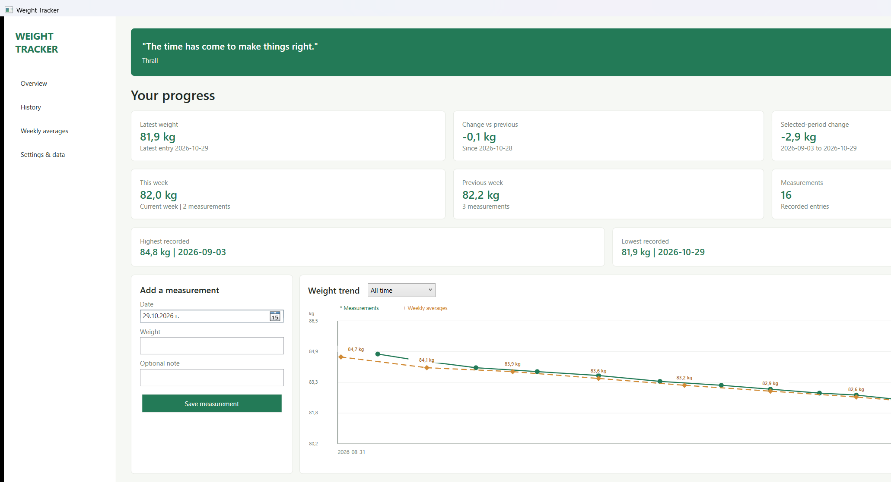
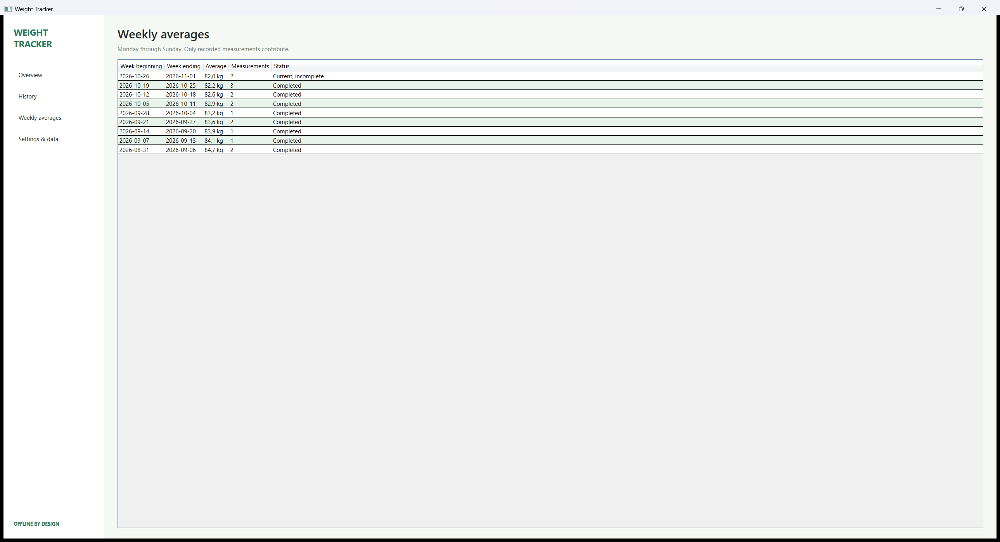

An offline-first personal measurement log built with C# WPF, .NET 10 and SQLite
Weight Tracker is a small local Windows application for recording dated weight measurements and understanding change over time. It combines a quick daily-entry form with a dashboard, measurement history, a trend chart and Monday-to-Sunday averages. Data stays in a local SQLite database. The portable Windows x64 package is self-contained, so the target PC does not need a separate .NET installation.
| Platform | Windows desktop; C# / .NET 10 WPF, Windows x64 single-file deployment. |
| Record keeping | One measurement per date; accept only finite positive weights, allow an optional note, and support editing and deletion. |
| Calculations | Store weights in kilograms; convert kg/lb for display; report weekly averages using only actual entries and calendar weeks running Monday through Sunday. |
| Views & settings | Dashboard summaries, date-range trend chart, searchable history, weekly table, light/dark appearance, color scheme, precision and date format. |
| Data workflows | Local SQLite persistence, backup/validated restore, CSV and JSON export, validated JSON import, and explicit record deletion. |
| Privacy & reliability | No account, telemetry, sync or network service is designed into the app. Preserve user data locally and report storage errors rather than silently moving it. |
| 1 · WPF UIEntry, dashboard, history, chart and settings | 2 · Domain logicUnits, dates, ranges and summaries | 3 · SQLite storeRecords, settings, weekly cache and transactions | 4 · Local workflowsQuotes, CSV/JSON and backups | 5 · Quality & releaseCore checks, source audit and publish script |
The WPF window calls typed C# services. The store is the source of truth; weekly aggregates are recalculated within write transactions. The chart and summaries render locally from query results.
Approach & reasoning: Use a native WPF window and a few clear screens rather than add a web stack or chart dependency. Keep entry, summaries and trend visible together; use WPF shapes for the chart.
Workflow: Build the Overview form and summary cards, then connect navigation, searchable/editable history, weekly table, settings, date-range selector and chart to service methods.
Testing strategy: Launch the packaged app, inspect populated dashboard and weekly screens, and verify navigation and rendering with synthetic local data. Automated checks focus on the underlying services, not pixel-level UI.
AI tool: Copilot in VS Code supported edits against the local XAML and C# context; build and launch checks provided independent verification.
Representative prompt (summary): “Build a native WPF dashboard with entry, history, weekly averages, settings and a local trend chart.”
Approach & reasoning: Keep kilograms as the canonical value so display-unit changes do not rewrite stored records. Centralize conversions, Monday/Sunday boundaries, date ranges and change calculations in WeightService.
Workflow: Add positive finite-value validation and kg/lb conversion; derive date ranges and averages from actual dated entries; refresh summary and chart after add, edit or delete.
Testing strategy: Check pound conversion, week boundaries crossing a month, leap-day month ranges, correct record counts and recalculation after an edit or deletion.
AI tool: Copilot in VS Code helped draft and refine service logic; deterministic test assertions checked the result.
Representative prompt (summary): “Keep weights in kg internally, validate finite positive values, and compute Monday–Sunday averages from recorded entries only.”
Approach & reasoning: Use a compact local database with parameterized commands and transactions. Enforce unique dates and valid weights in the schema; keep settings and weekly summaries local as well.
Workflow: Create schema version 1, implement record/settings queries, save and delete operations, and recalculate weekly aggregates in the same transaction as each mutation.
Testing strategy: Exercise save, duplicate-date rejection, edit/delete, persisted settings, weekly aggregate counts and SQLite backup/restore through isolated temporary databases.
AI tool: Copilot in VS Code was used to work within the existing C# service and project conventions; the test harness and SQLite execution verified behavior.
Representative prompt (summary): “Persist measurements and settings locally; make each change and its weekly-summary recalculation atomic.”
Approach & reasoning: Bundle quotes as JSON and keep import/export self-contained. Validate an entire JSON import before writing so malformed input cannot partially replace existing entries; use SQLite’s backup API for database copies.
Workflow: Load and validate local quote records, choose a daily quote deterministically, export kg-based CSV/JSON and import validated JSON with conflict updates.
Testing strategy: Verify bundled quote count and selection, JSON round-trip, invalid-import non-mutation, and database backup/restore.
AI tool: Copilot in VS Code assisted with the service implementation; filesystem and database assertions confirmed the file workflows.
Representative prompt (summary): “Validate all imported measurements before applying changes; malformed imports must leave the existing database unchanged.”
Approach & reasoning: Keep verification runnable without a separate test framework; distribute a self-contained win-x64 executable with local resources and data-location guidance.
Workflow: Run the console service checks, scan C# source for common network-client APIs, then use the Windows script to publish the single-file app and copy its guides/resources.
Testing strategy: 14 core checks pass; the static source network audit reports no configured clients; startup/shutdown smoke test passed. The audit is not proof of OS network isolation.
AI tool: Copilot in VS Code assisted with source and test changes; .NET SDK, test runner and PowerShell audit were used for reproducible checks.
Representative prompt (summary): “Add focused tests for date boundaries, editing, import safety and backup; keep the release self-contained for Windows x64.”
Biggest challenge — date-correct summaries. Week boundaries must remain Monday–Sunday across month and year changes, and averages must include only recorded measurements. An edit or delete must also update the corresponding aggregates. Focused edge-case tests helped pin down these rules.
Data integrity and portability. Import validation needs to finish before database mutation; backup restore needs an integrity/schema check. For portable deployment, the user database must remain beside the app rather than inside .NET’s temporary native-library extraction directory.
Offline claims. A source scan can catch common networking APIs, but cannot prove that a binary or operating system will never communicate. Accordingly, the report does not claim that firewall-blocked runtime behavior has been verified.
Copilot (through the Copilot SDK in VS Code) was the AI coding assistant used. Its main advantage for this project was staying close to the open workspace: it could help refine changes across WPF, services, tests and documentation in the same repository. It was preferred over a standalone chat workflow for that integrated code context and edit/test loop.
| Tool / role | Contribution and limits |
|---|---|
| Copilot in VS Code | AI assistance for implementation and refinement in project context. Suggestions still required review and executable tests. |
| .NET SDK / test harness | Repeatable builds and 14 concrete service checks. Not an AI assistant; supplied evidence beyond generated code. |
| PowerShell source audit | Repeatable scan for common network-related source patterns. Not a binary inspection or firewall test. |
| Other AI editors / agents | Not benchmarked on this project; no measured quality or speed comparison is claimed. |
Captured from the running Windows WPF application using synthetic sample records and a separate local database. The dashboard shows recent change, weekly summaries and the local trend; the second view shows the Monday–Sunday aggregate table.

Figure 1. Overview dashboard with 12 synthetic entries, current/prior-week summaries and the local trend chart. Evidence captured 29 October 2026.

Figure 2. Weekly averages screen showing week start/end, average weight, measurement count and current/completed status. Evidence captured 29 October 2026.